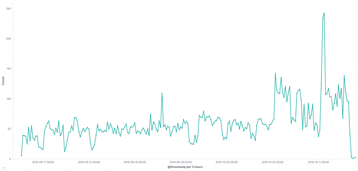
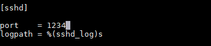

Wie kannst du SSH sicherer machen? Security through obscurity?
Diese Abbildung, meine geneigten Freunde, zeigt die Zugriffsversuche für SSH auf meinen Server. Zugegeben: Es ist nicht viel und wird sich vermutlich kaum auf die Performance des gesamten Systems auswirken. Mit diesem Grundrauschen muss aber eigentlich jeder leben, der einen SSH-Dienst über den Standard-Port 22 betreibt.

SSH-Zugriff der letzten 30 Tage
Wenn sich diese Zugriffe nicht auf die Performance auswirken, macht es dann wenigstens aus Sicherheitsgründen Sinn, diese Zugriffe zu unterbinden? Und die einfachste Möglichkeit das zu erreichen ist es, den SSH-Standardport (22) zu ändern. Mit meiner Argumentation folge ich denen in einem sehr interessanten SO-Thread zu dem Thema: Security through obscurity.
Es gibt da draußen einen Haufen Bots, die sämtliche erreichbare IP-Adressen des Internets permanent nach Schwachstellen absuchen, nicht nur für SSH. In der Regel wird dazu eine Anfrage, z.B. mit einem Standardpasswort, an den Standardport von SSH gesendet. Die Chance, dass jemand sein System nicht ausreichend oder überhaupt nicht gesichert hat, sind scheinbar hoch genug, sonst würde sich dieses stumpfe Abgrasen nicht lohnen.
Um das zu vermeiden, bietet es sich an, den Standard-Port zu ändern. Du wirst das abgrasen nicht verhindern, aber die Chancen stehen recht gut, dass die Bots das Interesse an dir verlieren und die Anfragen irgendwann nachlassen. Das ist aber spekulativ und auch nur ein kosmetischer Faktor. Wichtiger ist: Du wirst dein System dadurch ein ganz bisschen sicherer machen. Sollte morgen z.B. eine Sicherheitslücke für SSH bekannt werden, grasen die Bots die Standard-Ports ab um diese Lücke auszutesten. Die Zeit, alle denkbaren Ports zu testen, haben die Bots nicht, da Aufwand-Nutzen hier in keinem Verhältnis stehen.
Zunächst änderst du den Port von 22 auf eine beliebige Ziffer unter 1024. Warum das? Ports ab 1024 können auch von “nicht-priviligerten” Nutzern verwendet werden. Jemand, der Zugriff auf dein System hat, kann ohne Root-Rechte einen Port öffnen. Läuft SSH nun auf Port 12345, könnte ein normaler Benutzer SSH zum Absturz bringen, seinen eigenen Dienst auf diesem Port lauschen lassen und somit SSH simulieren. Blöd. Also Port < 1024. Das stellst du in der Datei /etc/ssh/sshd_config ein:
# What ports, IPs and protocols we listen for
Port 22
Port 999
Du kannst du beliebig viele Ports definieren, indem du einfach eine weitere Zeile einfügst. Für den Anfang empfehle ich, SSH weiterhin auf Port 22 laufen zu lassen, damit du dich nicht aussperrst. Danach startest du den SSH-Daemon neu (service sshd restart), verbindest dich auf den neuen Port und de-aktivierst Port 22 final, indem du die Zeile auskommentierst.
Wenn du schon mal da bist: Der Vollständigkeit halber solltest du auch daran denken, SSH nur mit Private-Publi-Key-Authenzifizierung zu nutzen und unbedingt die Passwort-Authentifizierung deaktivieren:
PubkeyAuthentication yes
PasswordAuthentication no
PermitRootLogin no
Den SSH-Zugriff für den Root-Benutzer zu deaktivieren, ist eine weitere wichtige Sicherheitseinstellung. Du solltest dich nur mit “unpriviligierten” Nutzern am System anmelden können. Der Zugriff auf der CLI erfolgt dann immer mit sudo. Aber das nur am Rande…
Wenn du iptables als Firewall nutzt, was hoffentlich der Fall ist, wirst du feststellen, dass du dich noch nicht auf Port 999 mit SSH verbinden kannst. Natürlich musst du den Port auch noch in der Firewall freigeben:
iptables -A INPUT -m state --state NEW -m tcp -p tcp --dport 999 -j ACCEPT
Beim Einsatz von fail2ban solltest du auch dort einstellen, dass SSH auf einem anderen Port arbeitet, damit fail2ban weiterhin Anmeldeversuche und BruteForce-Attacken abwehren kann. Die Einstellung dazu findest du in der Datei /etc/fail2ban/jail.conf oder /etc/fail2ban/jail.local. Dort gibt es einen Abschnitt [sshd], in dem du den Port von ssh auf deinen neuen Port, z.B. 999, festlegst:

Gegebenenfalls musst du diese Einstellung auch noch für SSH-Varianten wie z.B. Dropbear anpassen.